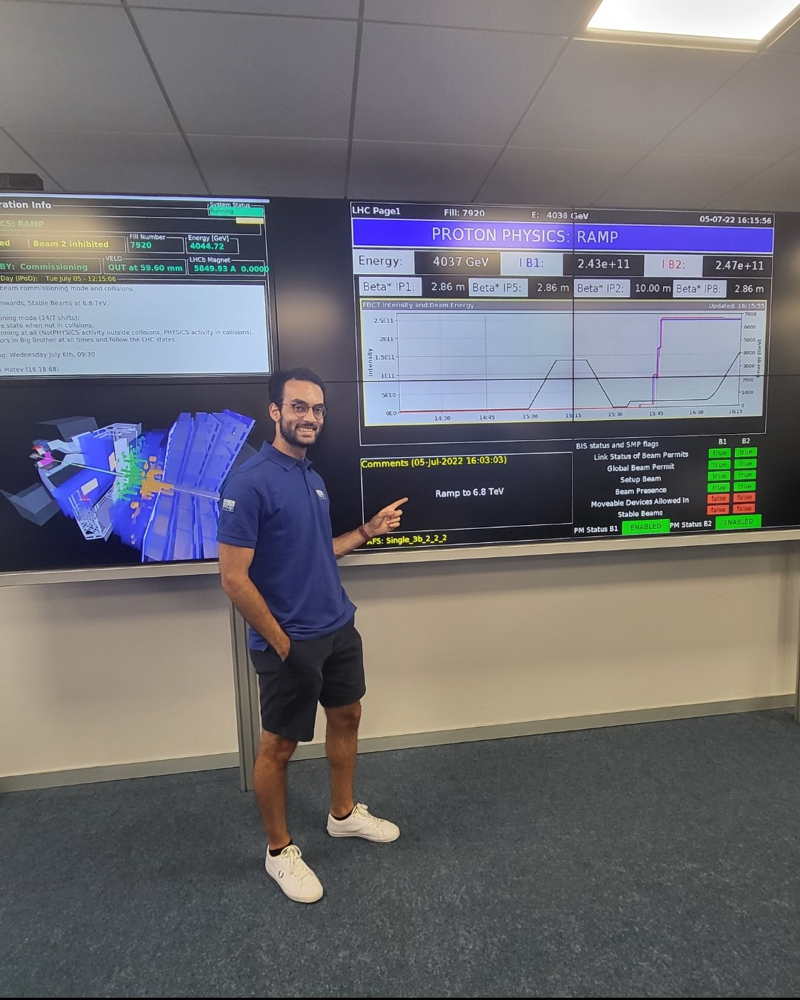
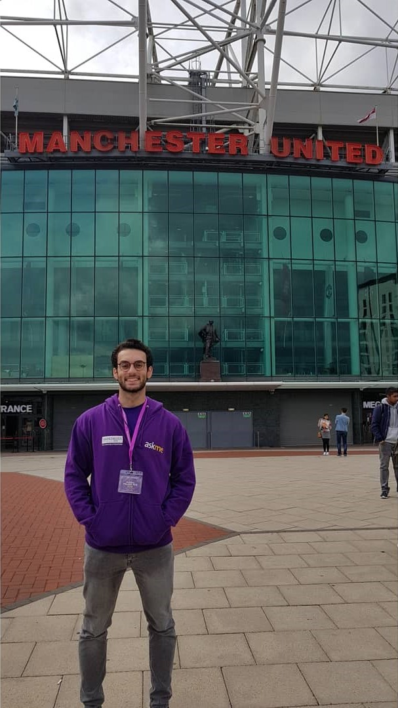
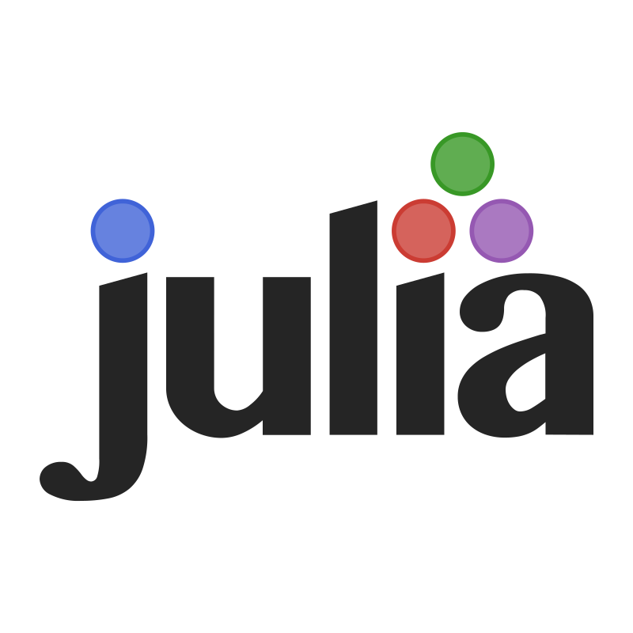
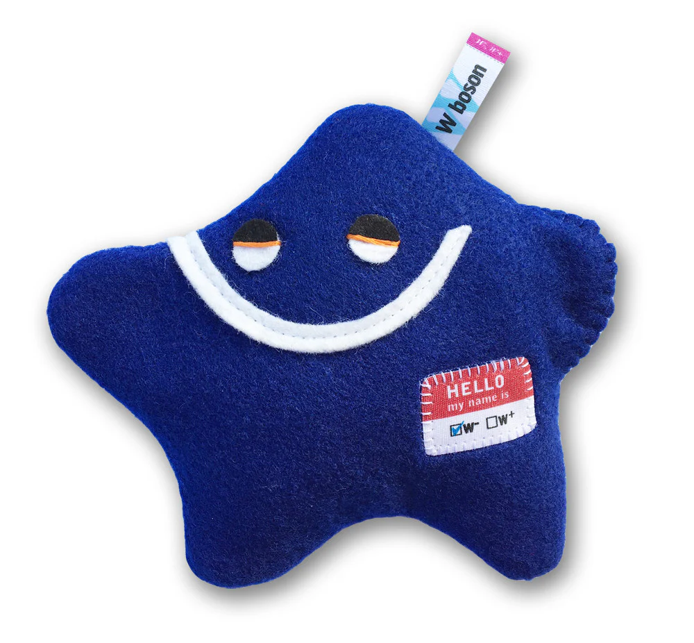
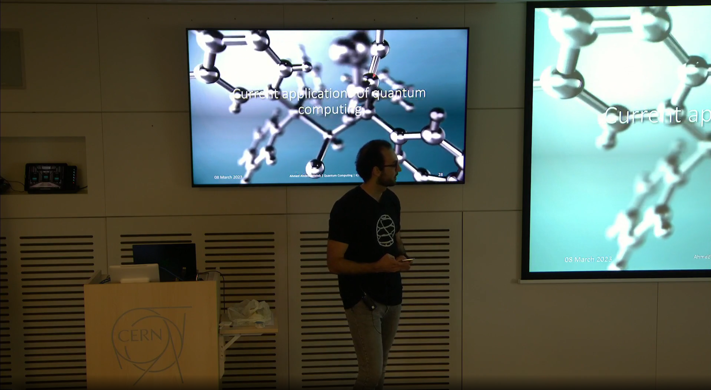
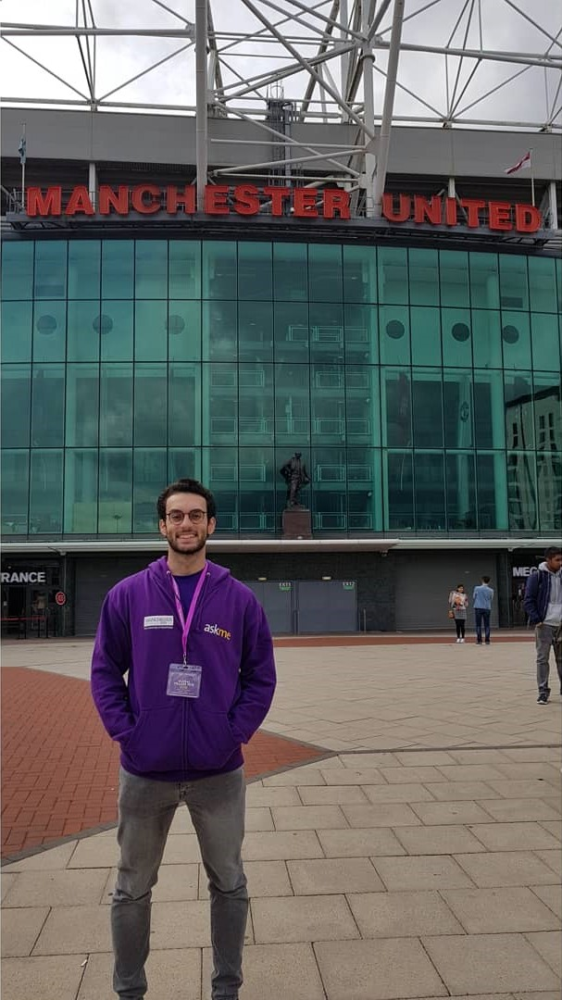
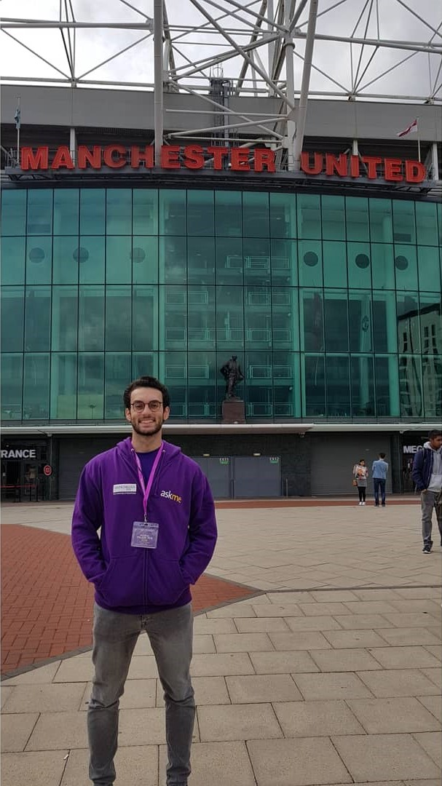

Current Particle Physics PhD candidate at the University of Warwick (LHCb Experiment - CERN) (Oct 2020 - Oct 2024).
Graduated with an MPhys Physics from the University of Manchester (2016-2020).
MPhys Project was with ATLAS (CERN). Tried to prove Majorana Neutrinos exist using Left-Right Symmetric Models (SM Extension/BSM) and simulations.
Performed QA work with STAR group at Brookhaven National Lab (New York) for 6 months (search for Quark Gluon Plasma using heavy ions).
Former Secretary, International Representative, Particle Physics Group representative and Athena Swan representative of the Postgraduate Student-Staff Liaison Committee of the University of Warwick Physics Department (PGSSLC).
Former Secretary of the University of Manchester Nuclear & Particle Physics Society (UoM NPPS).
Short-distance sprinter (100m and 200m) and former national champion.
Manchester United FC fan.
Interests


Particle Physics (especially Electroweak and BSM studies).
Machine Learning (Python, TensorFlow, Keras).
Quantum Computing (Qiskit, IBM Quantum Experience).
Web Development (HTML, CSS, JavaScript).
Football (Manchester United FC).
Sprinting (100m and 200m).
Reading (especially fantasy and science fiction).
Music (playing the drums).
Traveling (visited 21 countries so far).
Skills
Computing (click arrow to expand)
Python
Data analysis projects with Pandas, NumPy, Matplotlib, Seaborn, Scikit-learn, TensorFlow, Keras.
C++
Experience with OOP, Boost, BoostPython binding, metaprogramming, Lazy evaluation, Parallel executing, and STL.
ROOT
Data analysis in the context of High Energy Physics
CUDA
Parallel computing on NVIDIA graphics processing units (GPUs).
Bash
Shell scripting and system administration.
Linux (Ubuntu, CentOS, RHEL)
Experience with various Linux distributions and system administration.
SQL
Experience with relational databases and SQL queries.
LaTeX (for writing scientific papers)
Experience with writing scientific papers and creating presentations using LaTeX.
HTML, CSS, JavaScript
Web development and creating interactive websites.
Julia, R, MATLAB, Mathematica 
Data analysis and statistical computing.
Rust
Systems programming, memory-safe concurrency, replacing C/C++.
Qiskit, Pennylane and Cirq
Quantum Computing and Quantum Machine Learning.
Git, Github, Gitlab
Version control and collaboration on software projects.
Docker
Containerization and deployment of applications.
Microsoft
Experience with Microsoft tools and technologies (Azure DevOps, PowerBI, WSL, Word, Excel, PowerPoint, Teams).
Google
Experience with Google tools and technologies (Google Cloud, Kubernetes, Colab, Drive).
PhD Project

Wiki and Presentations (need CERN account)
Currently working with Dr Mika Vesterinen and Dr Miguel Ramos Pernas as part of the team trying to perform precision measurements of the W boson differential cross-section and mass using data from the renowned LHCb experiment at CERN.
In my PhD research project, we try to examine the charged lepton transverse momentum spectrum in `W\rightarrow\mu\nu` decays. We investigate the feasibility of background subtraction as a method for determining the `W` boson mass through measuring the differential cross-section in `p_T` and `\eta`. The ultimate aim of the project would be to make the first measurement of the unfolded muon ùëùùëá with sufficient precision. This would then allow for the precise measurement of the `W` boson mass. We leverage the dataset obtained at a center-of-mass energy of `\sqrt(s)=5` TeV from 2017 as a proof-of-principle measurement to demonstrate the effectiveness of the background subtraction technique. Our goal is to expand this measurement to encompass the entirety of the LHCb run-II dataset, which operates at a higher energy of `\sqrt(s)=13` TeV, thereby showcasing the full potential of our approach.
The proof of principle on the `W` boson mass measurement at LHCb paper can be accessed here.
FAQ
1. Why do we care about mW?
W boson is one of the key probes for new physics effects slightly deviating from the Standard Model.
The “Global electroweak fit” is sensitive to BSM physics, and the precision of the W boson mass is the bottleneck.
It allows us to probe further into the precision of mass measurements of the Higgs boson and the top quark.
At the precision that we are measuring mW, we are probing quantum loop corrections, including, possibly, loops from BSM.
2. What is unique about this study?
We aim to contribute to a highly precise measurement of mW.
We are experimenting with background subtraction as a new method for determining mW.
We are aiming for the first unfolded measurement of the muon ùëùùëá.
We are using the LHCb detector as a General Purpose Detector.
Our measurement can be a significant contribution towards an LHC-wide average.
3. How would your results compare to previous experiments?
We would measure the cross section as a function of [pT ,η] rather than just η.
By utilising the `\sqrt(s)=5` TeV dataset at LHCb obtained in 2017, our objective is to establish a proof-of-principle measurement that showcases the potential of the background subtraction method and unfolding techniques. This initial demonstration will pave the way for a seamless transition to utilizing the comprehensive Run-II dataset at `\sqrt(s)=13` TeV, enabling us to achieve significantly enhanced precision and reduced uncertainties
Our unfolded measurement (first of its kind) will allow theorists to use their models and try to fit mW without worrying about constraints from detector uncertainties.
Public Presentations and Lectures

Inverted CERN School of Computing (iCSC) Lecture 1 on Quantum Computing

 
